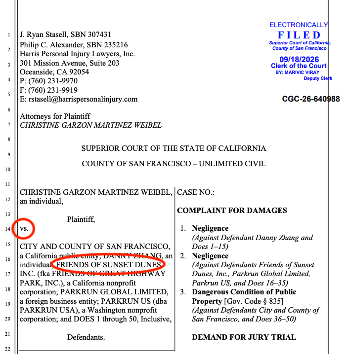
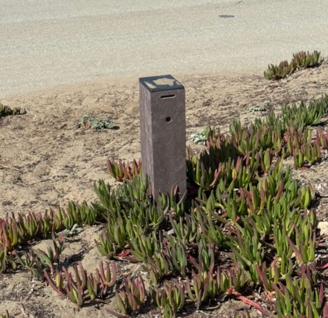

Yet Another Major Injury Accident In Sunset Dunes
There Have Now Been Four Major Injury Accidents That We Know Of. Why Is The City Not Reporting These?

We now know of yet another major injury accident between a bicycle traveling at a high rate of speed and a runner. The accident occurred last year and the runner is suing both the city and Friends of Sunset Dunes in Superior Court. (You can look up the case here using case #CGC-26-640988.) Since the closure of the Great Highway and the creation of Sunset Dunes, there have been at least four major injury accidents there. These have been collisions between various vehicles including an e-bike and electric unicycle and pedestrians resulting in serious injury.
None of these accidents was listed in the city data raising the question of whether the city has been covering up just how dangerous the road is.
We have previously reported on the three other accidents. You can read about them here.
The fourth accident was previously unreported and took place almost a year ago on November 29th, 2025.
The city has been failing to list these serious accidents in city data. The map of injury accidents can be found here. There are NO injury accidents shown on the closed section of the Upper Great Highway in the last two years even though at least four have occurred.
Have We Been Told the Truth About the Danger?
The city is failing to report serious accidents that occur in Sunset Dunes. We have previously reported that the attendance numbers are highly inflated, double-counted, and 90% are based on just two sensors located in a box north of Lawton. You can read about that here.

Both of these issues raise the question of whether city agencies have been truthful about Sunset Dunes. Just how dangerous is it? Are there other injury accidents that have not been disclosed to us by the city?